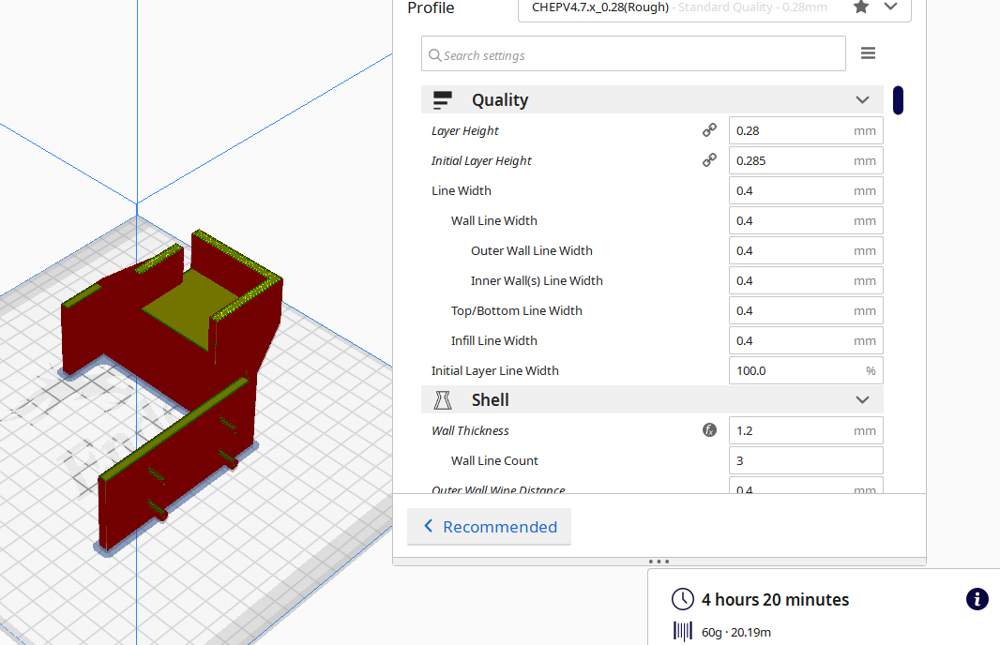
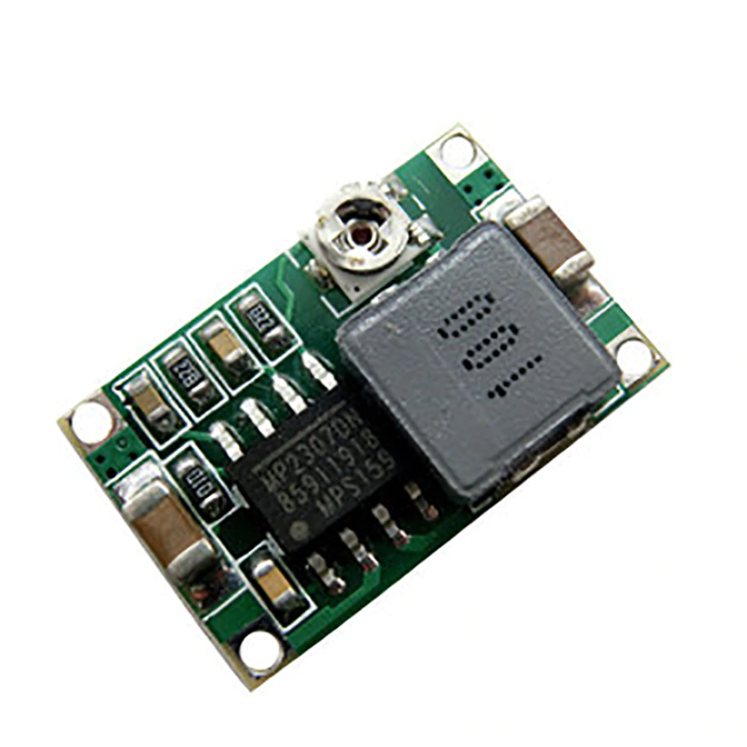
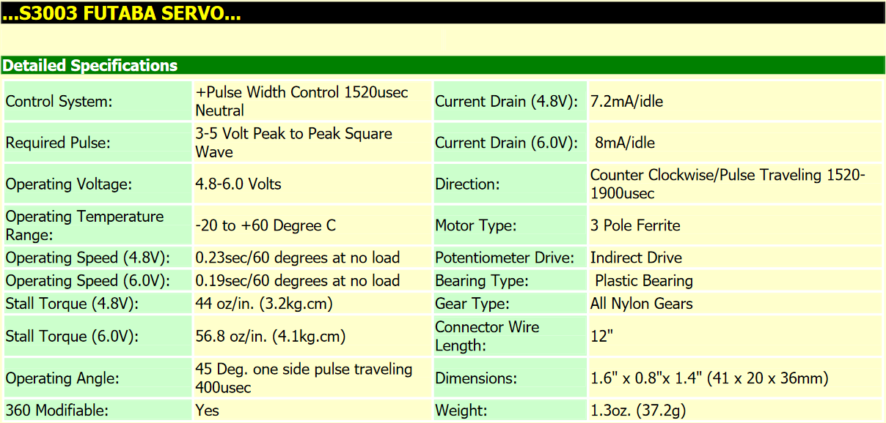
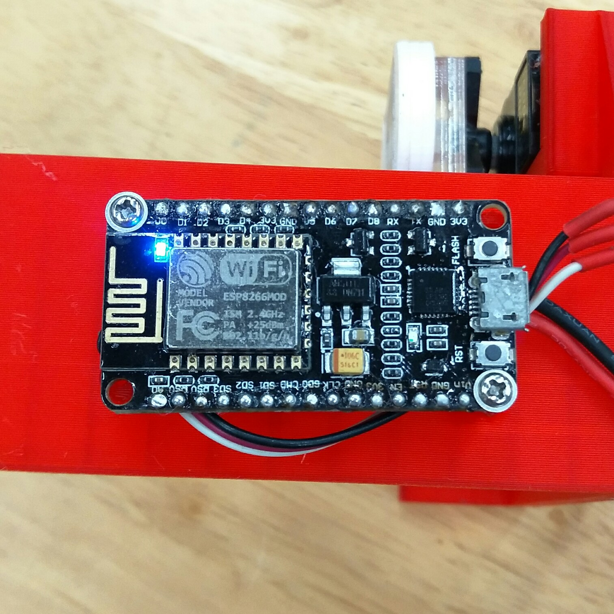
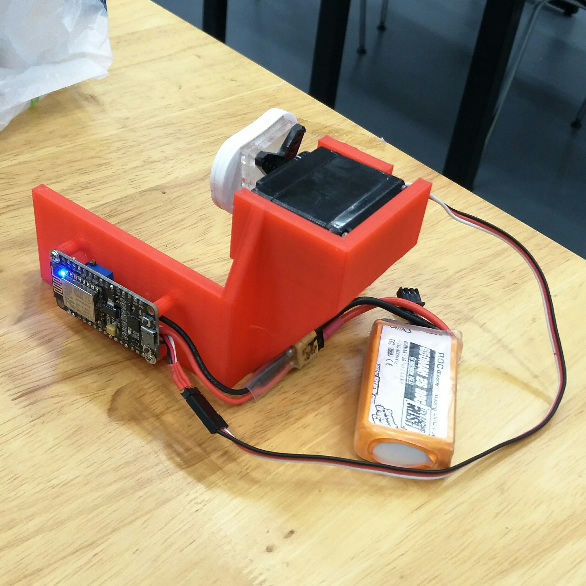
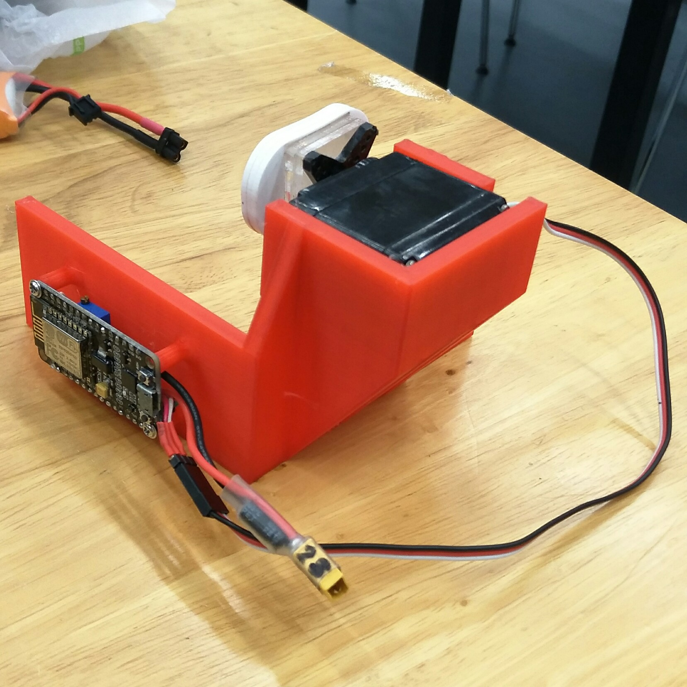

Home Page
FINAL PROJECT PAGE
Project idea:
Choice of microcontroller system
I will be using the ESP8266 NodeMCU Wi-Fi Dev Board. In order to allow remote access to the light switch, i have decided to use the wifi arduino. Since i already have a few of these development boards on hand, i feel like it would be a great fit to use in my project. Its small form factor also meant that i can tuck the board under the lightswitch, allowing for a much more compact and portable form factor.
3D Fabrication
I started my design by first making a tight fitting bracket for my light switch. After this, i used a pair of calipers and my servo to design a mount. After a few series of sketches, extrudes and fillets, i came up with this model.
After exporting the model as an STL, i put the files inside Cura and prepared it for printing. Printing it at 0.28mm layer height, it took about 6 hours to complete.

Fortunately, my servos and dev board fit snug-ly and i did not have to compensate for expansion.
I then depinned my nodeMCU in order to make space for the wiring harness and servo cable (the jumper wires would not allow the entire mounting system to sit flush with the wall).
However, i once i connected the servo directly to the dev board, it was not able to move. After probing around with a multimeter, i found out that the onboard regulator was only designed for small signal devices and not high current devices like servomotors.
This is why i had to add an external buck regulator to step down the 7.4V, 2 cell LiPo power into a more suitable 6V for the servo and microcontroller.
This is the buck converter i will be using to power my project.

So, why did i choose 6V instead of 5V?
(explain more on more torque and higher speed for higher voltage)
Since most servos are capable of 6V power and the microcontroller is 10V tolarant, i have decided to go with 6V bus voltage.
However, running my servo on 6 volts also means that more current is drawn. For example, at 5VDC, the Futaba S3003 servo draws only 7.2mA while on 6V, it draws 8mA (unloaded).

This is my final prototype, which uses a nodeMCU v3, full size futaba servo, mini buck converter(switching power supply) together with a lithium battery, and a few hunderd grams of printed and cut plastic (PLA, Acrylic).


